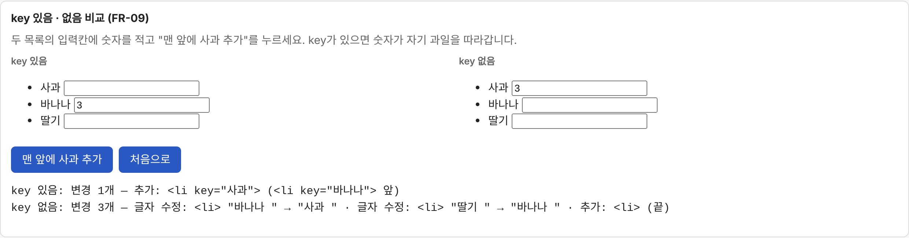
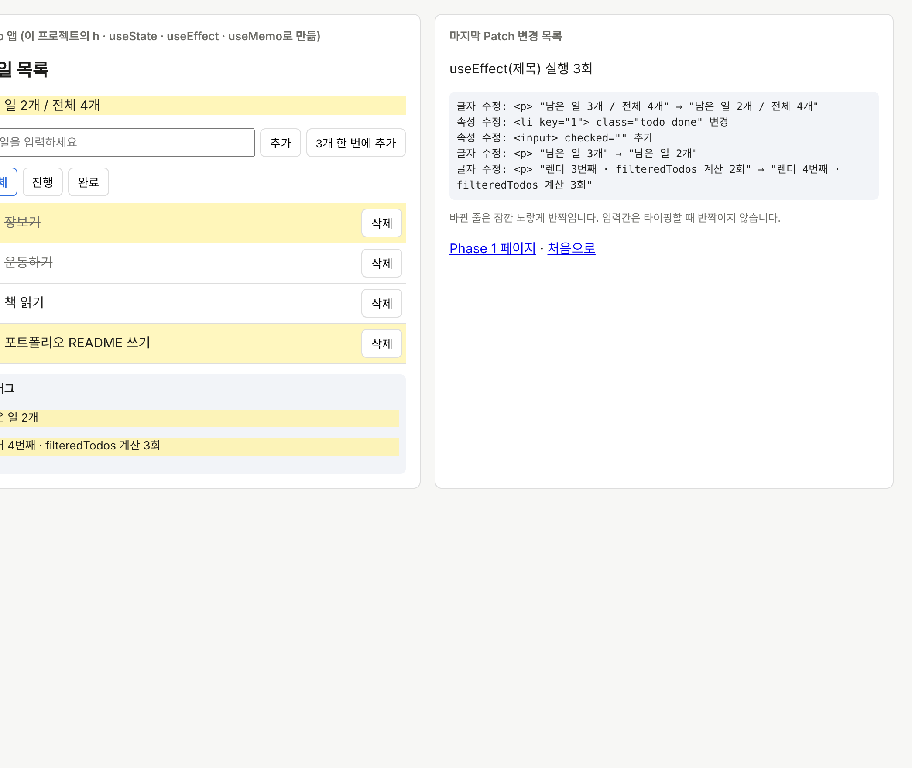

Vanilla TypeScript로 Virtual DOM · Diff · Patch와 Component · State · Hooks를 직접 구현하고, 요구사항부터 테스트까지 끊김 없이 추적하는 검증 하네스로 동작을 증명했습니다.
숫자는 push·PR마다 CI가 다시 계산하는 검증 보고서 값입니다.
JavaScript가 DOM을 바꾸면, 브라우저는 그 뒤로 화면을 다시 계산하고 그립니다. 바꾼 곳이 많을수록 이 뒷단의 일이 늘어납니다.
DOM을 하나 바꿀 때마다 브라우저는 스타일을 다시 계산하고, 크기·위치가 바뀌면 Layout(Reflow), 모양이 바뀌면 Paint(Repaint)를 다시 합니다. 화면 전체를 innerHTML로 갈아 끼우면 바뀌지 않은 요소까지 새로 만들어져 이 비용이 커지고, 입력값·커서·스크롤 같은 상태도 사라집니다.
useMemo)두 단계로 나눠 구현했고, Phase 2는 Phase 1의 Diff·Patch를 수정 없이 그대로 다시 씁니다.
patch.ts 하나 (lint로 강제)
h()로 화면 선언, 자식 컴포넌트는 props만 받는 순수 함수useState · useEffect(의존성·정리 함수) · useMemoqueueMicrotask로 모아 한 번에 렌더, 무한 루프는 50회에서 차단
과제의 5가지 핵심 케이스에 이동을 더했습니다. key로 짝을 지으면 목록 순서가 바뀌어도 노드를 새로 만들지 않고 옮깁니다.
| 경우 | 변경 | 실제 DOM에 하는 일 |
|---|---|---|
| 새로 생김 | 추가 | 새 노드를 만들어 제자리에 insertBefore |
| 없어짐 | 삭제 | remove() |
| 종류(글자↔태그)나 태그가 다름 | 교체 | 새로 만들어 replaceWith |
| 글자가 다름 | 글자 수정 | nodeValue만 바꿈 |
| 속성이 다름 | 속성 수정 | setAttribute/removeAttribute, value·checked는 지금 값도 맞춤 |
| 같은 key인데 자리가 다름 | 이동 | 기존 노드를 insertBefore로 옮김 (입력값이 따라감) |
일부러 단순하게 만든 부분과 그 이유입니다.
| 우리 구현 | 실제 React | 이유 |
|---|---|---|
자식 컴포넌트를 h() 안에서 바로 펼쳐 순수 Virtual DOM만 남김 | Fiber 트리에 컴포넌트 노드를 남김 | 자식이 상태 없는 순수 함수라 Phase 1 Diff를 그대로 씀 |
| 렌더링을 한 번에 끝까지 동기로 실행 | 작업을 나눠 메인 스레드를 양보할 수 있음 (Concurrent) | 구현 범위. 큰 목록에서는 메인 스레드를 오래 잡을 수 있음 |
| 요소마다 고정 리스너 1개, 핸들러만 교체 | 루트에서 이벤트 위임 | 매 렌더 새 함수가 생겨도 DOM 조작 0회 |
| effect를 Patch 직후 동기 실행 | 화면을 그린 뒤 비동기 실행 | 테스트에서 결과를 바로 확인 |
루트 컴포넌트 하나, unmount 없음 | 여러 루트, 마운트 해제 | 과제 범위 (상태는 루트에서만) |
Patch한 노드만 0.6초 반짝입니다. element.animate()를 써서 class·style을 건드리지 않으므로 DOM 조작 수 측정에 섞이지 않습니다.
Diff 결과를 두 트리에 색으로 칠해 삭제·추가·교체·수정·이동을 한눈에 보여 줍니다.
같은 변경을 두 목록에 적용해, key가 없으면 입력값이 엉뚱한 줄로 가고 조작이 늘어나는 것을 직접 확인합니다.
설계를 먼저 시제품으로 돌려 "고친 게 없는데 변경이 생기는" 결함을 찾고, 반례 17건을 판정해 ADR 4개로 고친 뒤 구현했습니다.
SRS(요구사항) → ADR(결정) → SDD(설계) → 코드 → 테스트가 이어지는지 스크립트가 검사하고, push마다 보고서를 PR 댓글로 올립니다.
코드를 일부러 980군데 망가뜨려 테스트가 잡는지 확인했습니다. 79.4%에서 테스트를 보강해 85.7%로 올렸습니다.
"테스트가 통과한다"를 넘어, 요구사항 하나하나가 설계·코드·테스트로 이어지는지를 네 관문으로 확인합니다.
| 관문 | 확인하는 것 | 결과 |
|---|---|---|
| G1 요구사항–설계 정합성 | 요구사항 ID가 설계에 빠짐없이 있는지, 폐기된 결정을 근거로 쓰지 않는지 | ✅ |
| G2 설계 검증 | 구현 전에 반례로 설계를 공격하고, 모든 반례를 사람이 판정했는지 | ✅ 17 / 17 |
| G3 구현 규칙 | TypeScript strict, DOM 쓰기는 patch.ts만, 의존 방향, React 0 | ✅ |
| G4 검증 항목 | 테스트·커버리지·뮤테이션·VT 증거·요구사항 사슬 | ✅ 49 / 49 |
자세한 결과: 검증 보고서 · CI 실행 기록 · 설계 결정(ADR)